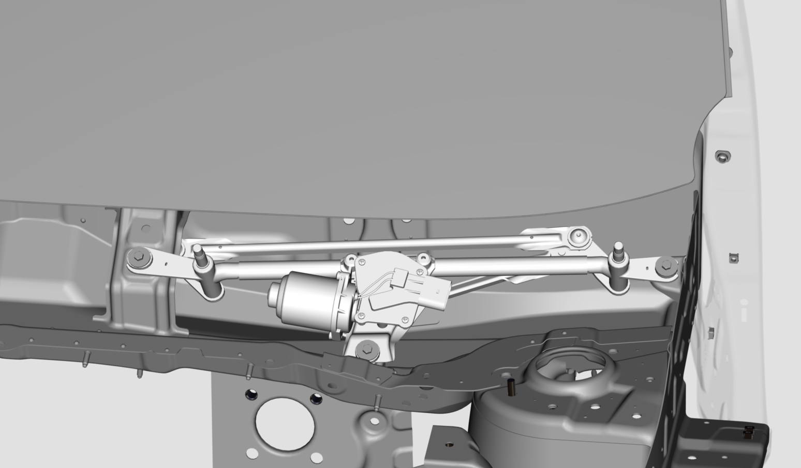
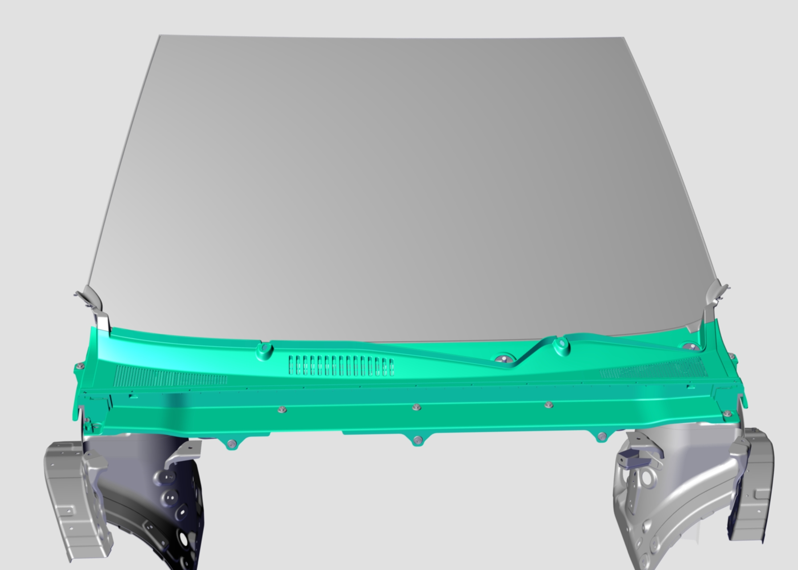
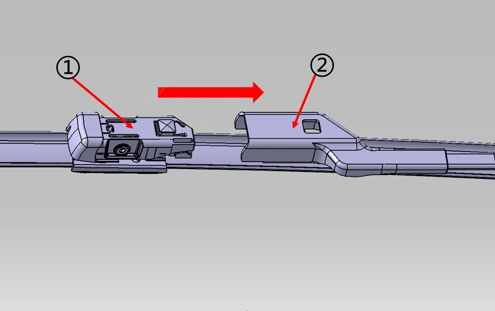
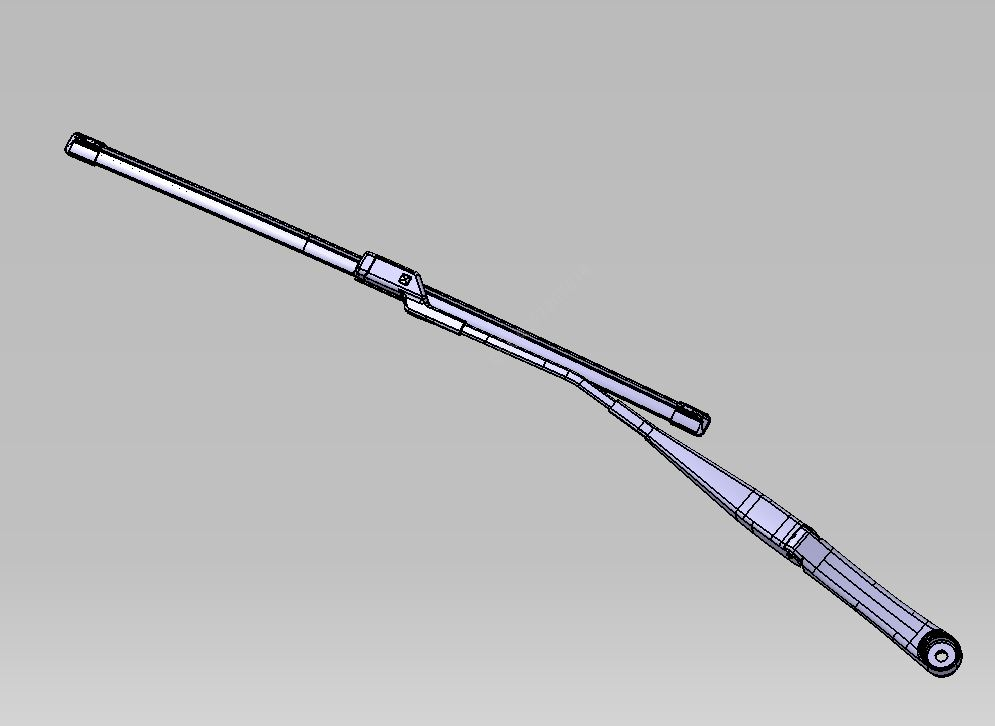
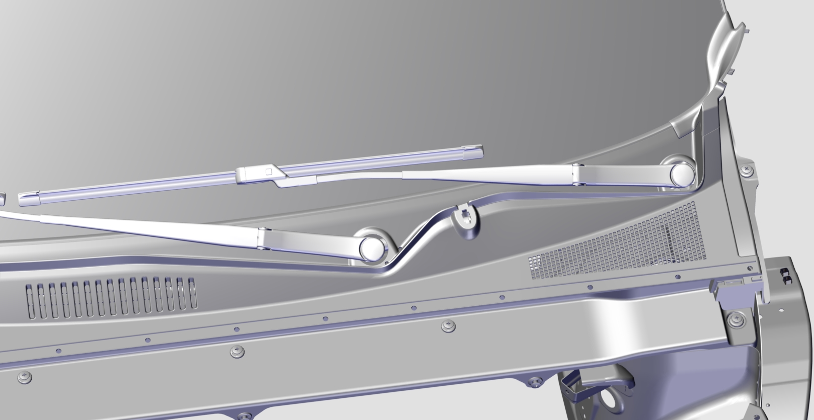
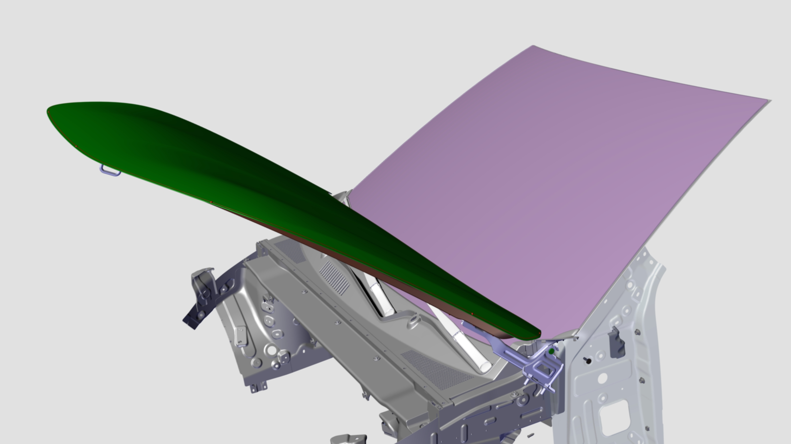
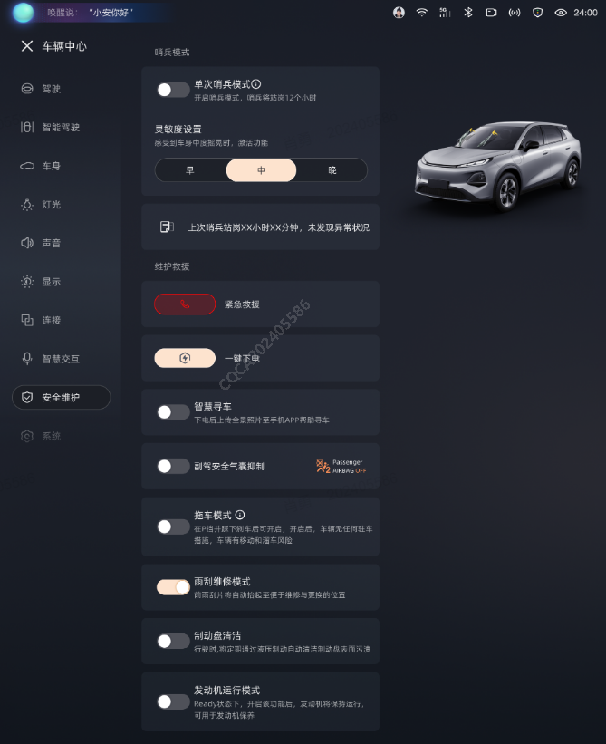
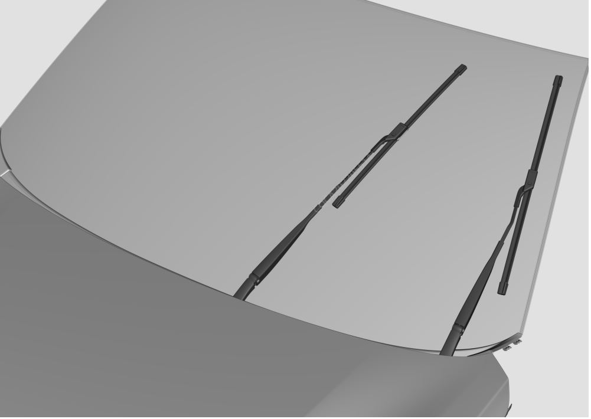
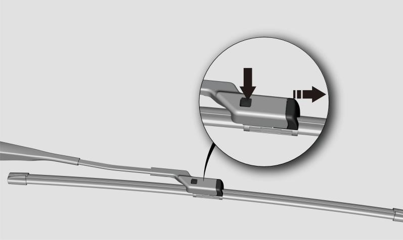

Установка
1. Установка: узла электродвигателя и рычага привода стеклоочистителя:

● Инструмент для Снятие: торцевая головка 10 mm
● Требования к момент затяжки: 11 ± 2 N.m
● Закрепить узел электродвигателя и рычага привода стеклоочистителя в соответствующих монтажных отверстиях сварного узла панели напорной камеры отопителя с помощью 3 Комплект шестигранного болта и плоской шайбы и нанести цветную метку;
● Соединить разъем со Сторона жгута проводов с разъемом мотора стеклоочистителя.
2. Установка узла облицовки переднего капота

Снятие и установка узла облицовки переднего капота
3. Предварительно собрать главный и вспомогательный рычаги стеклоочистителя с главной и вспомогательной щетками соответственно.

● Совместить фиксатор ① щетки с пазом ② рычага, а затем вставить щетку в паз рычага в направлении, указанном на рисунке. (Способ установки главной и вспомогательной щеток стеклоочистителя на главный и вспомогательный рычаги одинаков)

4. Сборка главного и вспомогательного рычагов и щеток стеклоочистителей в сборе

● Инструмент для Снятие: торцевая головка 14 mm
● Требования к момент затяжки: 20 ± 2 N.m
● Слегка нажать один раз на кнопку переднего стеклоочистителя на головке рычага управления освещением на рулевой колонке (режим MIST), дождаться остановки мотора стеклоочистителя. Это необходимо для обеспечения нахождения мотора стеклоочистителя в исходном положении.
● Установить монтажные отверстия узла главного рычага и щетки стеклоочистителя, а также узла вспомогательного рычага и щетки стеклоочистителя на выходные валы рычагов узла электродвигателя и рычага привода стеклоочистителя соответственно.
● Центрируя по выходному валу рычага узла электродвигателя и рычага привода стеклоочистителя, отрегулировать исходные положения главной и вспомогательной щеток по маркерным точкам на стекле так, чтобы кромка резиновой ленты щетки располагалась на маркерной точке
● Закрепить узел главного и вспомогательного рычагов и щеток стеклоочистителей с помощью двух Шестигранная гайка с фланцем соответственно и нанести цветную метку;
● Установить крышки отверстий рычагов на главный и вспомогательный рычаги соответственно;
Снятие
Порядок Снятие обратен порядку Установка, как указано ниже
● Поднять и зафиксировать капот.

● С помощью плоской отвертки снять крышку отверстия рычага стеклоочистителя.
● С помощью торцевой головки 14 mm открутить две крепежные гайки рычага стеклоочистителя, снять рычаг и щетку в сборе.
● Демонтировать узел облицовки переднего капота. Снятие и установка облицовки переднего капота
● Снять узел электродвигателя и рычага привода стеклоочистителя: сначала отсоединить жгут проводов, подключенный к мотору стеклоочистителя, затем с помощью торцевой головки 10 mm открутить три Комплект шестигранного болта и плоской шайбы, крепящие мотор стеклоочистителя, и снять узел мотора стеклоочистителя.
Метод Снятие щетки стеклоочистителя
1. Вход в сервисный режим
После включения питания автомобиля на центральном дисплее нажать [Центр автомобиля] - [Безопасность и обслуживание] - [Сервисное положение стеклоочистителя], функция активируется, узел рычага и щетки переднего стеклоочистителя переместится и зафиксируется в сервисном положении


2. В месте соединения рычага и щетки крепко удерживать стержень рычага, пальцем с усилием нажать на кнопку щетки (в направлении, указанном на рисунке) и удерживать ее.

3. Вытащить щетку в направлении, указанном на рисунке выше, завершив Снятие и замену щетки стеклоочистителя.
4. После завершения замены снова нажать на центральном дисплее [Центр автомобиля] - [Безопасность и обслуживание] - [Сервисное положение стеклоочистителя], функция отключится, узел рычага и щетки переднего стеклоочистителя вернется в исходное положение